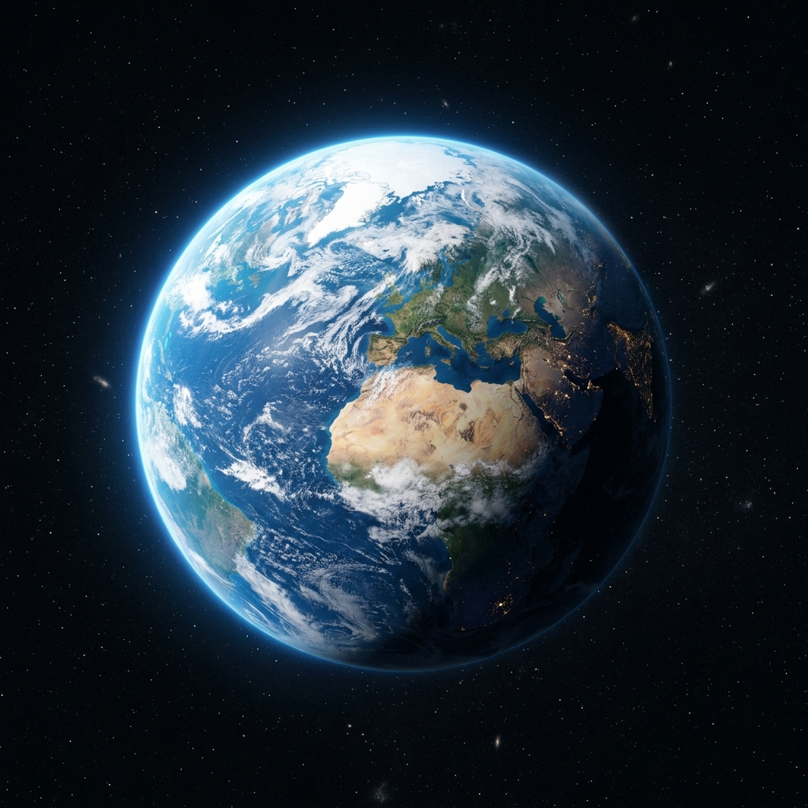

Descubre los datos y detalles más sorprendentes de las Escrituras
¿Qué significa realmente la palabra "Biblia"?
Viene del griego biblía, que significa literalmente “los libros”.
La expansión de las Escrituras iniciada en Jerusalén hacia todo el planeta:
Cifras clave sobre cómo está organizada la Biblia:
Los 3 idiomas originales en que fue escrita la Biblia:
Hombres de distintas épocas y trasfondos inspirados para escribir:
Fue escrita por cerca de 40 hombres diferentes (reyes, poetas, profetas y pescadores) a lo largo de más de 1,000 años.
Tradicionalmente se le considera autor de 13 cartas (epístolas) fundamentales del Nuevo Testamento.
Comparación entre las partes más cortas y las más largas de la Biblia:
Los mensajes más breves y directos del texto bíblico:
Dependiendo de la versión bíblica en español, Job 3:2 también es citado como el versículo más corto:
Declaraciones sorprendentes redactadas miles de años antes de que la ciencia moderna las confirmara.
Una antigua y sorprendente declaración sobre nuestro planeta:

* Texto poético antiguo que hace referencia al planeta en el espacio.
Menciones antiguas sobre la evaporación, la condensación y la lluvia:
* Etapas del ciclo hidrológico: Evaporación ➔ Condensación ➔ Precipitación ➔ Escorrentía
Porque las cosas invisibles de él, su eterno poder y deidad, se hacen claramente visibles desde la creación del mundo, siendo entendidas por medio de las cosas hechas, de modo que no tienen excusa.